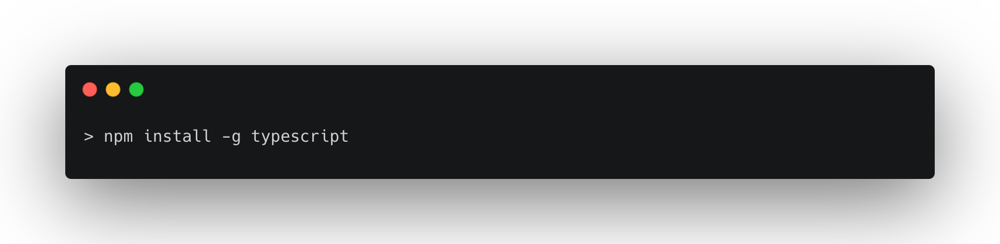
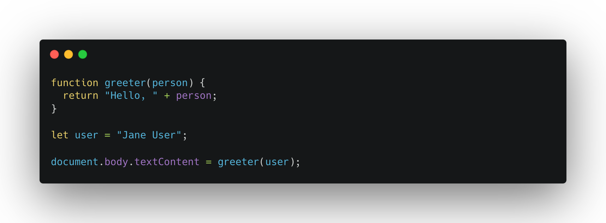
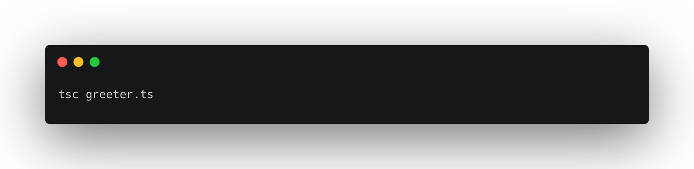
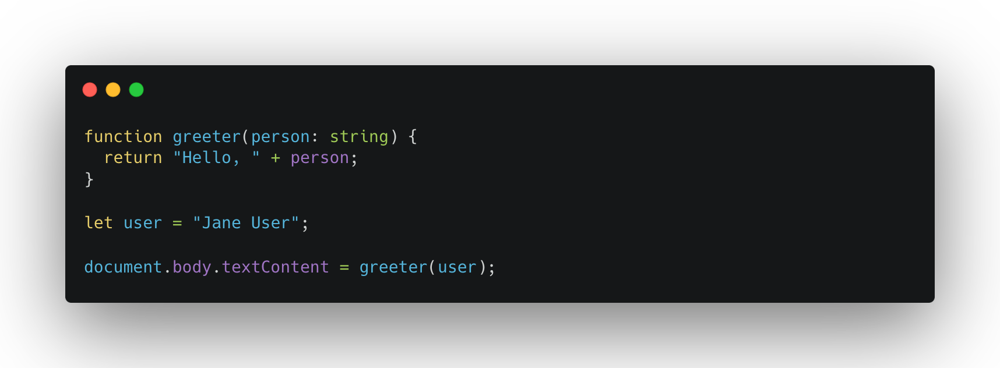
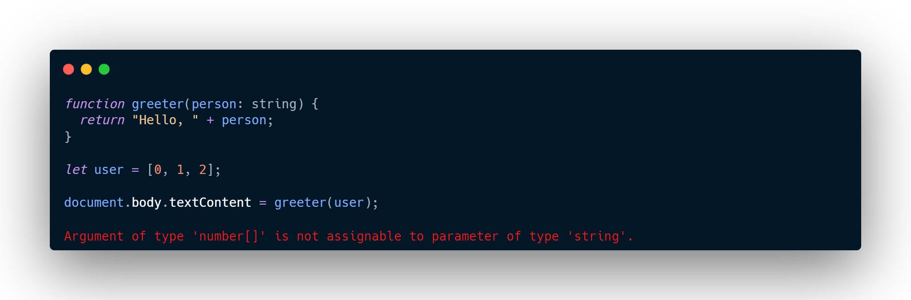
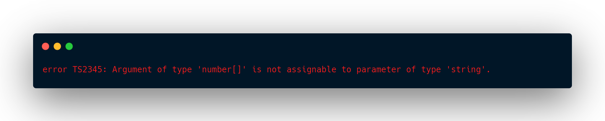
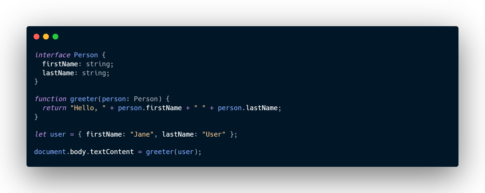
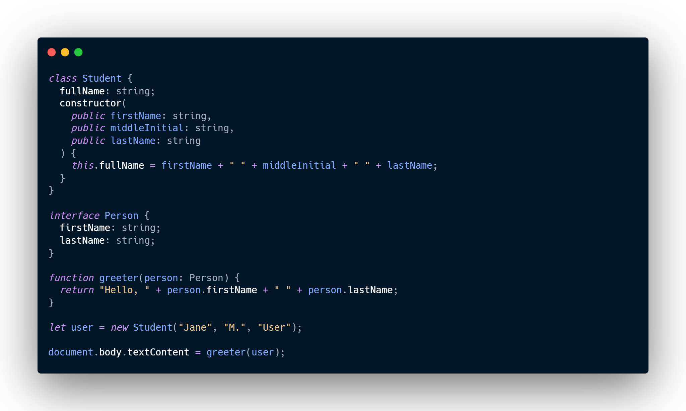
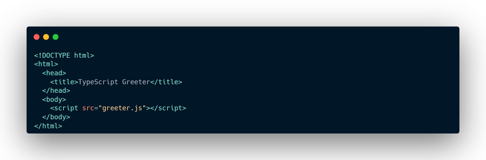

TypeScript Tooling in 5 minutes
Let's get started by building a simple web application with TypeScript.
Installing TypeScript
There are two main ways to add TypeScript to your project:
- Via npm (the Node.js package manager)
- By installing TypeScript's Visual Studio plugins
Visual Studio 2017 and Visual Studio 2015 Update 3 include TypeScript language support by default but does not include the TypeScript compiler, tsc. If you didn't install TypeScript with Visual Studio, you can still download it.
For npm users:
Building your first TypeScript file
In your editor, type the following JavaScript code in greeter.ts:
Compiling your code
We used a .ts extension, but this code is just JavaScript. You could have copy/pasted this straight out of an existing JavaScript app.
At the command line, run the TypeScript compiler:
The result will be a file greeter.js which contains the same JavaScript that you fed in. We're up and running using TypeScript in our JavaScript app!
Now we can start taking advantage of some of the new tools TypeScript offers. Add a : string type annotation to the 'person' function argument as shown here:
Type annotations
Type annotations in TypeScript are lightweight ways to record the intended contract of the function or variable. In this case, we intend the greeter function to be called with a single string parameter. We can try changing the call greeter to pass an array instead:
Re-compiling, you'll now see an error:
Similarly, try removing all the arguments to the greeter call. TypeScript will let you know that you have called this function with an unexpected number of parameters. In both cases, TypeScript can offer static analysis based on both the structure of your code, and the type annotations you provide.
Notice that although there were errors, the greeter.js file is still created. You can use TypeScript even if there are errors in your code. But in this case, TypeScript is warning that your code will likely not run as expected.
Interfaces
Let's develop our sample further. Here we use an interface that describes objects that have a firstName and lastName field. In TypeScript, two types are compatible if their internal structure is compatible. This allows us to implement an interface just by having the shape the interface requires, without an explicit implements clause.
Classes
Finally, let's extend the example one last time with classes. TypeScript supports new features in JavaScript, like support for class-based object-oriented programming.
Here we're going to create a Student class with a constructor and a few public fields. Notice that classes and interfaces play well together, letting the programmer decide on the right level of abstraction.
Also of note, the use of public on arguments to the constructor is a shorthand that allows us to automatically create properties with that name.
Re-run tsc greeter.ts and you'll see the generated JavaScript is the same as the earlier code. Classes in TypeScript are just a shorthand for the same prototype-based OO that is frequently used in JavaScript.
Running your TypeScript web app
Now type the following in greeter.html:
Open greeter.html in the browser to run your first simple TypeScript web application!
Optional: Open greeter.ts in Visual Studio, or copy the code into the TypeScript playground. You can hover over identifiers to see their types. Notice that in some cases these types are inferred automatically for you. Re-type the last line, and see completion lists and parameter help based on the types of the DOM elements. Put your cursor on the reference to the greeter function, and hit F12 to go to its definition. Notice, too, that you can right-click on a symbol and use refactoring to rename it.
The type information provided works together with the tools to work with JavaScript at application scale.